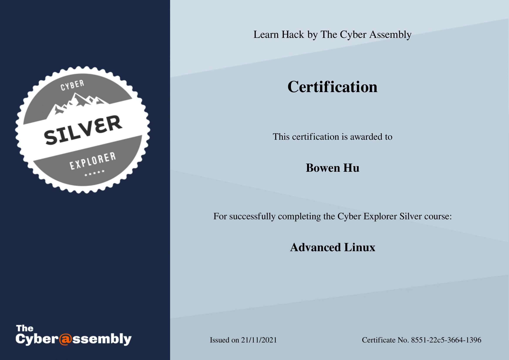

Events & Certificates

CTF.SG
CTF.SG is a Capture the Flag competition focusing on areas such as Web, Reverse Engineering, Cryptography et cetera. My team and I secured 40th place, with a score of 1782.
Check our solutions out
A. YCEP
CSA Singapore organised a Advanced YCEP Bootcamp from 17th November to 8th December, where participants completed various courses with various challanges to receive a certificate.

A. YCEP Advanced Linux
This course taught me the basics of the Linux operating system, such as shell commands (ls, chmod, cd etc.) along with file permissions (rwx) and superuser.